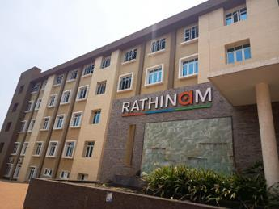
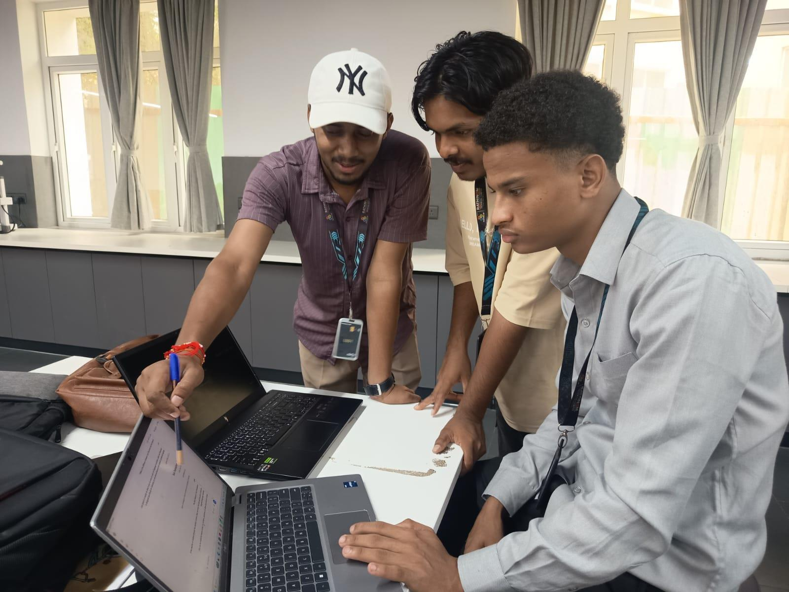
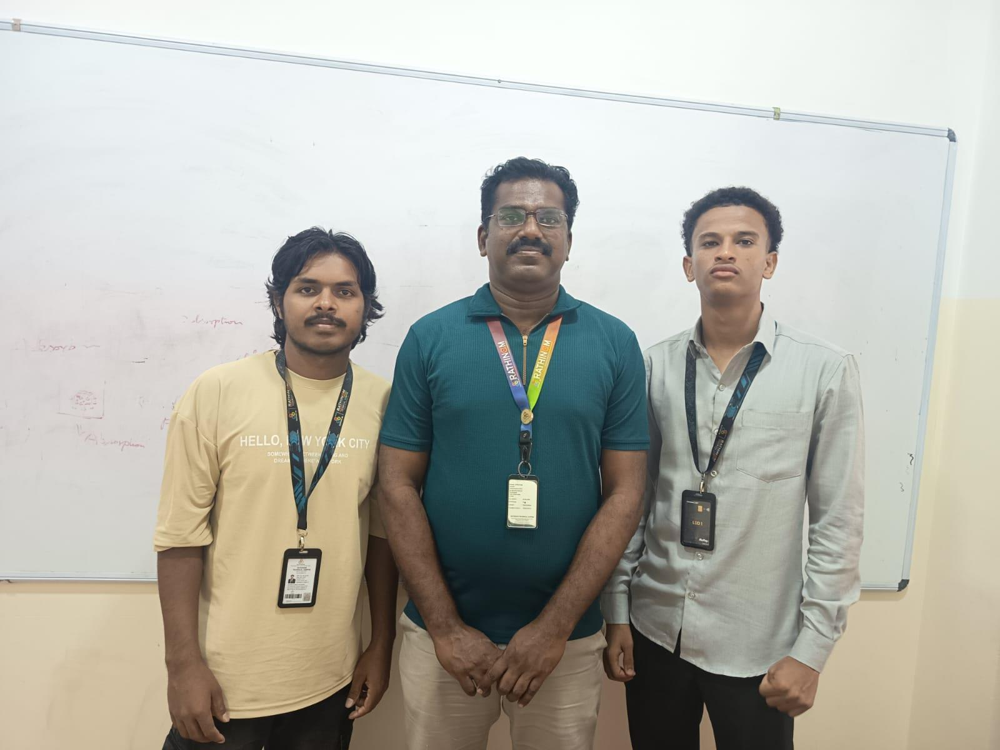

Low-resource languages have fewer digital NLP and educational resources.
SMART INDIA HACKATHON 2026 · SOFTWARE
SikshaSetu
Bridging languages.
Building understanding.
AI-assisted multilingual learning that turns speech into understanding.
Mother-tongue learningReal-time voiceAI-assistedOffline-first direction
“When language becomes a bridge, learning can travel further.”
LIVE TRANSLATION BRIDGE
≤ 3s TARGET
TEACHER
Hindi
“Aaj hum sankhya seekhenge.”
STUDENT
Vernacular
Context-aware translated output
◉ Voice-to-voice
⌁ Offline-first direction
✦ Bilingual content
01Language-firstLearning in familiar languages
02Two-wayTeacher ↔ student communication
03AI-assistedTranslation + learning content
04ScalableDesigned for wider classroom use
When language becomes a learning barrier.
Primary teachers may be Hindi-medium trained while learners are more comfortable in tribal or regional languages.
01
Teacher–student language gap
Teachers can lack the linguistic tools needed to deliver mother-tongue-based instruction confidently and continuously.
COMMUNICATION → LEARNING
Classroom dialogue needs fast, simple communication rather than slow manual translation.
Creating bilingual worksheets and activities can add to teacher workload.
A classroom solution should consider environments where internet access is inconsistent.
From voice to understanding.
One bridge for translation, bilingual content and classroom support.
Real-time voice translation
Two-way teacher ↔ student voice interaction through speech recognition and translation.
Mother-tongue support
Designed around tribal and regional language learning environments.
Bilingual learning content
Lesson scripts, instructions and learning activities can be presented bilingually.
AI-generated worksheets
Generate bilingual worksheets and classroom activities aligned to learning outcomes.
Text-to-speech
Translated content can be delivered as audio to support classroom participation.
Offline-first direction
Designed toward offline use after initial content synchronization for low-connectivity settings.
HOW SIKSHASETU WORKSVoice → understanding
Speech InputTeacher / student
→
Speech to TextWeb Speech API
→
AI TranslationNLLB-200
→
Translated TextContext-aware output
→
Text to SpeechAudio delivery
→
Child LearnsIn familiar language
The essential stack behind SikshaSetu.
Only the technologies that directly power the core experience.
INPUTSpeechTeacher / student
→
PROCESSFastAPI + NLLB-200Speech → translation
→
REAL-TIMEWebSocketLive communication
→
OUTPUTText + AudioFamiliar language
Technology with a classroom purpose.
A focused stack for real-time multilingual classroom translation.
Supports teaching and participation through familiar language.
Can help reduce linguistic barriers between teachers and learners.
Assists teachers who do not fully know the learner's mother tongue.
Multiple output modes can make classroom assistance easier to use.
OUR VISION
Every child should be able to understand the lesson — without language becoming the barrier.
InclusiveMultilingualAccessibleScalable
Six roles. One shared purpose.
A cross-functional team covering leadership, frontend experience, domain research, AI/NLP, integration, quality assurance, demo coordination and documentation.
01 · LEADERSHIP
Aadarsh Kumar Chaudhary
Team Leader · Tech LeadArchitecture, technical direction, coordination and overall system integration.
02 · PRODUCT
IBRAHIM ABDELMAGID
Frontend & UX DeveloperReact interface, user experience and classroom interaction flow.
03 · RESEARCH
Bhavika K1
Domain ResearcherEducation-domain research, user needs, language requirements and problem validation.
04 · AI / NLP
Mahesh Rana
AI/NLP & Integration DeveloperAI/NLP pipeline, speech and translation integration, APIs and real-time processing.
05 · QUALITY
Krithika S
QA & Demo CoordinatorTesting, demo reliability, live flow validation and fallback preparation.
06 · DOCUMENTATION
Saugat Yadav
PPT & Documentation LeadPPT, case-study documentation, diagrams and final submission material.
Guidance behind the journey.
Institutional mentorship and support from Rathinam Technical Campus.

MENTOR · TECHNICAL COMPETITIONS & HACKATHONS
Mr. K. Muthusamy
Head - Technical Competitions and Hackathons
Rathinam Technical Campus
MENTOR · DESIGN & INNOVATION
Er. Gajendran Parthasarathi
Head - School of Design and Innovation
Rathinam Technical CampusFrom a real classroom context to a practical AI concept.
A concise view of the case study: context, users, approach, solution, evaluation and future scope.
CASE STUDY LOCATION
Rathinam Technical Campus, Coimbatore
The academic case study focused on understanding a real-world teacher–student language gap and exploring how Artificial Intelligence could reduce that barrier through voice translation, bilingual educational content and classroom assistance.



Case-study context
Our academic case study at Rathinam Technical Campus focused on the teacher–student language gap and practical requirements such as voice interaction, bilingual content, simple usage and low-connectivity support.
Objective of the case study
- Understand communication problems caused by language differences.
- Identify the main users of the proposed system.
- Understand teacher and student requirements.
- Explore AI for real-time language translation.
- Develop the concept of an easy-to-use educational assistant.
- Support mother-tongue-based learning.
- Consider offline usage for limited-connectivity areas.
03
Five classroom challenges
A teacher may be trained in Hindi while students may be more comfortable communicating in a tribal or regional language, making instructions and explanations harder to understand.
Ho, Mundari and Santhali have fewer digital language resources compared with widely used languages, making language-based AI applications harder to build.
Traditional translation tools may not be designed specifically for classroom interaction, where teachers need quick and simple communication without interrupting teaching.
Preparing bilingual worksheets, activities and other educational materials can require additional effort from teachers.
Continuous connectivity cannot always be guaranteed in rural areas, so a solution that depends completely on cloud services may not be practical.
04
Users & stakeholders
Primary User · TeacherSecondary User · StudentSchoolsParentsEducation DepartmentsSchool AdministratorsEducational Content Developers
05
User personas
Teacher PersonaPrimary School Teacher · Hindi-medium trained
Problem: Difficulty communicating with students who mainly understand a different mother tongue.
Needs: Quick translation · Voice-based interaction · Simple interface · Bilingual teaching content · Ready-to-use learning materials · Offline functionality.
Goal: Explain lessons clearly without depending completely on another language-proficient teacher.
Student PersonaPrimary School Student · Familiar mother tongue
Problem: Difficulty understanding lessons when explained only in another language.
Needs: Familiar language · Simple explanations · Audio support · Interactive learning · Easy-to-understand educational content.
Goal: Understand classroom concepts and participate more confidently.
06
Problem → users → requirements → solution → evaluation
01Understanding the Problem
Identify the teacher–student language barrier.
02Identifying the Users
Identify teachers and students as main users.
03Understanding Requirements
Discuss what a language-support system should provide.
04Exploring Technology
Explore AI, speech recognition, translation and text-to-speech.
05Designing the Solution
Develop the SikshaSetu concept from identified requirements.
06Evaluating the Idea
Consider usability, accessibility, offline operation and classroom suitability.
07 · PROPOSED SOLUTION
SikshaSetu is an AI-powered vernacular education and translation solution designed to reduce the communication gap between teachers and students.
The main concept is to allow a teacher to communicate in a language they are comfortable with while the system translates the communication into the student's familiar language. The system can also support bilingual educational content such as lesson scripts, activities and worksheets.
Teacher speaks↓AI processes speech↓Speech → text↓Text is translated↓Student receives translated output
Student speaks↓AI processes speech↓Speech → text↓Text is translated↓Teacher receives translated output
08 · SYSTEM WORKFLOWTwo-way classroom communication
Voice InputTeacher or student speaks
→
Speech RecognitionSpoken input → text
→
Language TranslationSource → selected target
→
Output GenerationText + audio
→
Classroom InteractionContinue the conversation
Example routesHindi → Tribal LanguageTribal Language → Hindi
09
Core capabilities
Two-way voice communication between teachers and students.
Focus on languages used in tribal and low-resource educational environments.
Lesson scripts, instructions and activities can be presented bilingually.
Help generate bilingual worksheets and classroom activities.
Translated text can be converted into speech for familiar-language audio support.
Designed with offline usage in mind for areas with poor connectivity.
Source/target selection, microphone, translated text, audio playback, learning content and worksheet generation.
10 · UI / UX DESIGN
Simple enough for classroom use.
The case study emphasizes a simple interface where the teacher can select the source and target language and start speaking without complicated menus.
Source language selectionTarget language selectionMicrophone buttonTranslated text areaAudio playbackLearning contentWorksheet generationDesigned to be suitable for low-cost Android devices.
11 · CASE STUDY SCENARIO
Hindi-speaking teacher ↔ mother-tongue-speaking students
A primary school teacher is comfortable teaching in Hindi while students mainly communicate in their mother tongue. SikshaSetu can process the teacher's Hindi speech and provide translated output in the student's selected language. The student can respond in their mother tongue and the system can translate the response back for the teacher.
Teacher speaks→AI processes→Student receives→Student responds→Teacher receives
12
What the case study highlighted
Easy to useAffordableAccessibleSuitable for actual usersReliable in low-connectivity areasDesigned for classroom environments
Voice interaction can be useful because speaking can be easier than typing, especially for young students. The case study also emphasized solving the user's actual problem rather than adding technology only for demonstration.
13
Benefits across education
Students can receive explanations in a language they are more comfortable with, supporting understanding and participation.
Can reduce communication barriers between teachers and students from different linguistic backgrounds.
Teachers can communicate without requiring complete knowledge of the student's mother tongue.
Voice-based interaction can make digital educational tools easier to use.
Demonstrates how AI, speech recognition, translation and text-to-speech can be combined for education.
A software-based solution can reduce dependency on additional language-specific support where resources are limited.
14 · Challenges & limitations
Low-Resource Languages: AI models may have limited training data for Ho, Mundari and Santhali.
Translation Accuracy: AI translation may not always capture exact meaning or local context.
Voice Recognition: Background noise and pronunciation differences can affect speech recognition.
Offline AI: Running AI models offline on low-cost devices requires optimization.
Device Limitations: The application needs to work efficiently on limited RAM and processing power.
Classroom Environment: The system should handle background noise and multiple people speaking.
15 · Testing & evaluation
Translation accuracyVoice recognition accuracyResponse timeEase of useQuality of generated educational contentUser experienceDevice performance
The purpose of testing is to check whether the system can provide useful and understandable translations without creating additional difficulty for teachers.
16 · Learnings from the case study
- Understanding the user is important before developing the technology.
- Language can become a major barrier to effective education.
- AI can support accessibility as well as automation.
- Voice interaction can make educational technology more natural.
- Offline support is important for areas with limited connectivity.
- A good solution should be simple enough for non-technical users.
- Technology should solve a real problem rather than being added only for demonstration.
17 · Expected outcome
- Support Hindi-to-vernacular translation.
- Provide two-way voice communication.
- Generate bilingual learning materials.
- Support classroom activities.
- Reduce language-related communication problems.
- Work in low-connectivity environments.
- Improve accessibility of mother-tongue-based education.
18 · Future scope
Future improvements include adding more Indian regional and tribal languages, better speech recognition, more accurate translation models, more educational content, improved offline AI performance on low-cost devices, and support for more subjects, age groups and educational activities.
19 · Conclusion
The case study at Rathinam Technical Campus highlighted the importance of language in primary education. SikshaSetu's proposed approach combines voice recognition, language translation, text-to-speech and bilingual educational content to create a bridge between teachers and students, while considering limited connectivity, device limitations and low-resource languages.
The complete solution data, organized in one place.
Key information from the supplied SIH26042 solution sheet is presented here without hiding important fields. Search to quickly find any item.
Languages connect.
Learning empowers.
SikshaSetu · SIH26042 · Smart Education · Rathinam Technical Campus
Back to top ↑